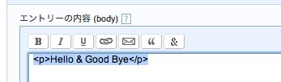
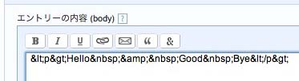

EntityRefButtonプラグインは、特殊文字を実体参照に変換するボタンをエントリ編集画面およびクイック投稿画面に追加します。

本プラグインはMovableType 3.3以上またはMovableType Enterprise 1.52以上で動作します。
本パッケージに含まれる「plugins」ディレクトリ内の「EntityRefButton」ディレクトリを、Movable Typeインストールディレクトリの「plugins」ディレクトリの下にコピーしてください。
次に本パッケージに含まれる「mt-static/plugins」ディレクトリ内の「EntityRefbutton」ディレクトリを、Movable Typeインストール時に「StaticWebPath」として指定したディレクトリ（デフォルトでは「mt-static」というディレクトリ名になっていると思います）の下の「plugins」ディレクトリにコピーしてください。
結果、以下のような構成になります。
mt (Movable Typeインストールディレクトリ)
`-- plugins
`-- EntityRefButton
|-- entityrefbutton.pl
`-- lib
`-- EntityRefButton
|-- L10N
| |-- en_us.pm
| `-- ja.pm
`-- L10N.pm
mt-static (※StaticWebPathにて指定されたディレクトリ)
`-- plugins
`-- EntityRefButton
`-- images
|-- amp-hover.gif
|-- amp.gif
|-- formatting-icons
| `-- ref.gif
`-- html-ref.gif
作業後、Movable Typeのシステム・メニューのプラグイン管理画面を表示し、プラグインの一覧に「EntityRefButton」が表示されていることを確認してください。これで設置完了です。
実体参照に変換したい文字列を選択し、「&（アンパサンド）」が描かれている右端のボタンを押すだけです。
 注意：MovableType v4.0では、フォーマットが「リッチテキスト」の場合、変換ボタンは表示されません。それ以外のモードでのみ表示されます。
本プラグインをインストールした状態では、スペースを改行禁止スペース( )に変換します。この動作を禁止したい場合は、
MovableType のユーザーは目的を問わず、このプラグインを無償で自由に利用することができます。このプラグインの著作権はM-Logic, Inc.が所有しています。
このプラグインは無保証です。作者はこのプラグインの利用における一切の動作保証とサポートを行いません。